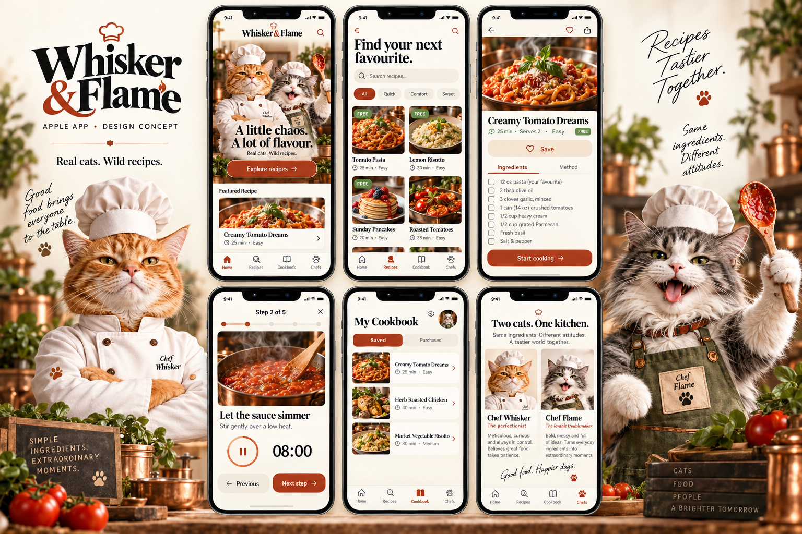
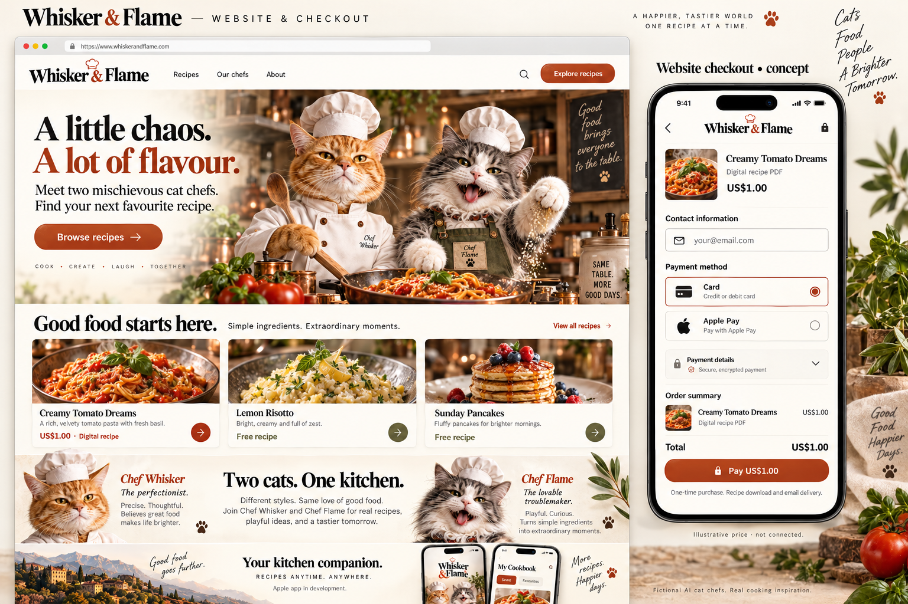

Whisker & Flame
Apple app first. A matching recipe website with checkout. These are visual design boards, not a working app or connected store.
The Apple app
Home, recipe discovery, recipe detail, cooking mode, personal cookbook, and the two chefs.

The landing page & website checkout
A character-led introduction, recipe discovery, and a separate hosted payment journey. US$1 is an illustrative price; payment methods and domain are illustrative.

Design review note: the pasta appears as a free app recipe and a paid printable PDF on the website. This is a proposed format distinction; final pricing and entitlements are not configured. App navigation icons will be standardized in implementation.
Generated visual concepts using the supplied brand references. Editable tokens, flows, character guidance, and generation prompts accompany these flattened images.